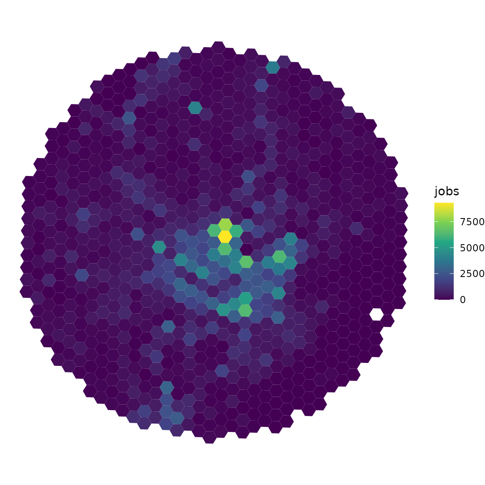

uci is an R package to measure the
centrality of cities and regions. The package implements the Urban
Centrality Index (UCI) originally proposed by Pereira et al. (2013). UCI measures the extent
to which the spatial organization of a city varies from extreme
monocentric to extreme polycentric in a continuous scale, rather than
considering a binary classification (either monocentric
or polycentric). UCI values range from 0 to 1. Values closer to
0 indicate more polycentric patterns and values closer to 1 indicate a
more monocentric urban form.
Installation
# from CRAN
install.packages('uci')
# development version from GitHub
remotes::install_github("ipeaGIT/uci")Demonstration on sample data
First, let’s load a few libraries we’ll be using in this vignette.
Data input
The uci package comes with a sample data for demonstration and test purposes. The data is a small sample of the spatial distribution of the population, jobs and schools around the city center of Belo Horizonte, Brazil. This sample data set is a good illustration of the type of data input required by uci.
Here is how the sample data looks like:
data_dir <- system.file("extdata", package = "uci")
grid <- readRDS(file.path(data_dir, "grid_bho.rds"))
head(grid)
#> Simple feature collection with 6 features and 4 fields
#> Geometry type: POLYGON
#> Dimension: XY
#> Bounding box: xmin: -43.96438 ymin: -19.97414 xmax: -43.93284 ymax: -19.96717
#> Geodetic CRS: WGS 84
#> id population jobs schools geometry
#> 1 89a881a5a2bffff 439 180 0 POLYGON ((-43.9431 -19.9741...
#> 2 89a881a5a2fffff 266 134 0 POLYGON ((-43.94612 -19.972...
#> 3 89a881a5a67ffff 1069 143 0 POLYGON ((-43.94001 -19.972...
#> 4 89a881a5a6bffff 245 61 0 POLYGON ((-43.9339 -19.9728...
#> 5 89a881a5a6fffff 298 11 0 POLYGON ((-43.93691 -19.971...
#> 6 89a881a5b03ffff 555 1071 0 POLYGON ((-43.96136 -19.970...The data is an object of class "sf" "data.frame" with
spatial polygons covering our study area and a few columns indicating
the number of activities (e.g. jobs, schools, population) in each
polygon. Our particular sample data is based on a spatial hexagonal grid
(H3 index). While there are advantages of using regular spatial grids to
calculate spatial statistics, uci also works with
non-regular geometries, such as census tracts, enumeration areas or
municipalities.
We can visualize the spatial distribution of jobs using
ggplot2:
library(ggplot2)
ggplot(data = grid) +
geom_sf(aes(fill = jobs), color = NA) +
scale_fill_viridis_c() +
theme_void()
Calculating UCI
In the example below, we calculate how mono/polycentric our study area is considering its spatial distribution of jobs.
df <- uci(
sf_object = grid,
var_name = 'jobs',
dist_type = 'euclidean'
)
head(df)
#> UCI location_coef spatial_separation spatial_separation_max
#> 1 0.2538635 0.5278007 3880.114 7475.899By default, the uci() function uses Euclidean distances
between polygons. However, Euclidean distances can lead to misleading
results in the case of areas with a concave shape (like a bay). In these
cases, it is strongly recommended to use
dist_type = 'spatial_link'. These spatial link distances
consider Euclidean distances along the links of spatial neighbour links.
This is a bit more costly computationally speaking, but it does return
more realistic results.
Mind you, though, that when using "spatial_link"
distances, there should be no disconnected island of polygon (or group
of polygons). In some cases, users might need to manually edit their
spatial data to include a polygon representing a road or bridge
connecting disconnected parts of the area.
Formal definition of UCI
The Urban Centrality Index (UCI) is given by the product of the Location Coefficient (LC) and the Proximity Index (PI). With this formulation, UCI calculates urban centrality simultaneously accounting for both the concentration of activities and the proximity between activities.
The Location Coefficient
(LC) was introduced by Florence
(1948) to measure the unequal distribution factor of jobs within
an urban area. It works as a nonspatial inequality measure
(similarly to Gini, for example). It reflects, for example, the extent
to which the number of activities are concentrated in few polygons. The
range of the LC is 0 to (1 - 1/n). If LC
equals zero, then economic activity is evenly distributed, while values
close to (1 - 1/n) indicate that employment is concentrated
in a few areas.
where Si is the share of employment in area i (Ei)
relative to the total employment (E) of the city; E is the total number
of jobs in a city; and n = number of areas.
Meanwhile, the Proximity Index (PI) is a transformation that Pereira et al. (2013) proposed for the Venables index, originally developed by Midelfart-Knarvik et al. (2002) to examine changes in the spatial distribution of economic activity. The Venables index (aka spatial separation index) is defined as:
where S is a column vector
of Si; and D is a distance matrix whose entry
dij is the distance between the centroids of areas i and
j.
When all employment activity is concentrated in just one spatial
unit, the minimum value of V is reached; that is, zero (no
matter where this spatial unit is located). However, the index has no
maximum value and therefore cannot be compared across different
spatial settings. To overcome this limitation, it is necessary to
calculate the maximum attainable value of V.
The Proximity Index (PI) solves the normalization
issue with V and changes its interpretation to suit our
needs. The interpretation of PI is the opposite of V, with
its theoretical range being (0, 1). Values of PI closer to
1 mean that employment is clustered in one single center.
If PI is 0, employment is as spatially separated as
possible. In other words, activities are distributed in a way that
maximizes the distances between them.
The normalization by Vmax is what makes the comparison
of urban areas of different shapes and sizes possible. However, the
estimation of Vmax is not trivial, because it has no
closed-form solution. In a very simple square grid, Vmax is
obtained when each corner has one-fourth of the total employment. In a
region forming a perfect circle, the maximum value of V occurs when all
employment is evenly distributed along the external edge.
In the original paper, Pereira et al.
(2013) proposed a simple heuristic approach to calculate
Vmax(the “opposite of maximum proximity”) as a homogeneous
distribution of values along the edge of the study area. This is the
default strategy used in the uci() function with the
default parameter bootstrap_border = FALSE. Nonetheless,
the users can also use a bootstrap simulation approach to estimate
Vmax by setting bootstrap_border = TRUE.
Bootstraping Vmax
Using bootstrap to find max Venables spatial separation. Users can
set parallel = TRUE to speed uo computation using parallel
processing.
df_bootstrap <- uci(
sf_object = grid,
var_name = 'jobs',
bootstrap_border = TRUE,
showProgress = FALSE
)
head(df_bootstrap)
#> UCI location_coef spatial_separation spatial_separation_max
#> 1 0.2553067 0.5278007 3880.114 7515.494This bootstrap approach simulates 20000 random distributions of activities along the border. It practice, it works interacting two simulations: (1) it simulates that all jobs are concentrated in up to 2, 3, 4, 5 … 51 polygons along the border, and (2) for each number of selected polygons, it shuffles 400 random positions of those polygons along the border.
The bootstrap approach is more computationally expensive but it
returns Vmax values that can be between 5 and 25% higher
than the heuristic approach. Although the bootstrap simulation might
still not return the maximum theoretical value of spatial separation, it
is probably very close to it